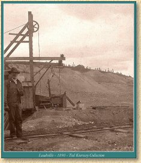
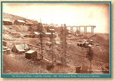
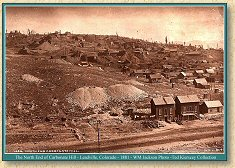
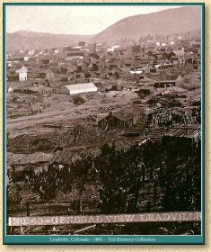
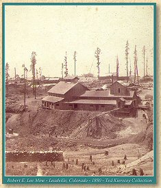
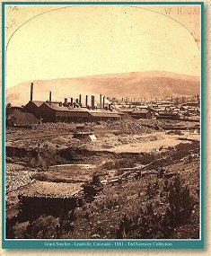
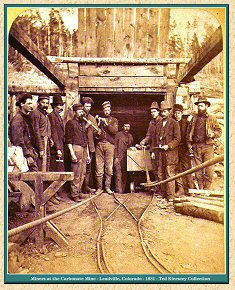
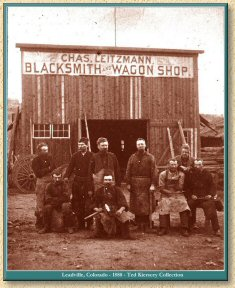
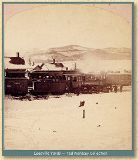
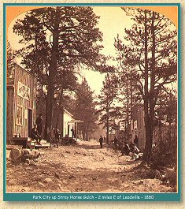

| Leadville, Colorado - A Capsule History by Jerry Clark |
| Leadville was the greatest of all the Colorado mining regions. Mining in the area began in 1859 and continues today. The history of Leadville is a series of boom and bust periods following the fortunes of the mining industry. |
| Early Placer Mining |
| Placer mining for gold was started in California Gulch in 1859. By 1861 5,000 prospectors covered the area and the settlement of Oro City was established. The placer deposits quickly played out and even though the Printer Boy Mine was successfully opened in 1868, by the 1870's the area was almost deserted. In 1878 a metallurgist named Alvinius Woods and his partner William Stevens visited the area and discovered that the local sands which had made sluicing gold so difficult were composed of carbonate of lead with an extremely high silver content. The mother lode was discovered on the side of Iron Hill. This discovery led to the second boom in the area, the silver rush would lead to the founding of Leadville. |
|
 1890 |
 1881 |
 1881 |
 1881 |
| The Silver Boom |
| Thousands were drawn to the area by the discovery of silver in the mid 1870's. As a result of this explosive growth, the city of Leadville was incorporated in January 1878. At an elevation of 10,200 feet, it is the highest incorporated city in the country. By the end of 1879 the population in Leadville reached 18,000. By 1893 the estimated population reached 60,000. This was the period when great fortunes were made and lost throughout the district. |
| By 1881 there were 14 smelters and reduction plants operating in the Leadville district. Some of the leading mining properties in the district included the Matchless, Morning Star, Iron Silver, Catalpa, Chrysolite, and Little Pittsburgh. Silver production reached a peak of over $11,000,000 in 1880, leveled out at about $10,000,00 for a number of years and then began to decline. |
| The history of Leadville is rich with stories of various characters. Some of these tales have become legends; how much truth is in them is now difficult to tell. |
| Horace Tabor became one of the richest men in the world and took as his second wife the beautiful Baby Doe Tabor. He died a pauper. On his deathbed Tabor instructed Baby Doe to "Hang on to the Matchless. It will make millions." It didn't, and Baby Doe froze to death in the mine building years later, a penniless widow. |
| Molly Brown, wife of John Brown, the superintendent of the Little Jonny Mine, accidentally burned hundreds of thousands of dollars in the stove where he had hidden them. After this episode it was claimed Johnny went out and discovered another mine. Molly went on to fame after her voyage on the Titanic as the Unsinkable Molly Brown. She never confirmed or denied the tale of the burned money. |
| Tabor was originally a shopkeeper in Leadville who grubstaked two out of luck prospectors. They discovered the Little Pittsburgh Mine. It was capitalized after one year for $20 million. |
| Tabor supposedly bought a mine from another developer who thought it was worthless. The seller had salted the mine with good ore to make it appear a worthwhile investment. Tabor sank the mineshaft 25 feet deeper and discovered a tremendous vein. Tabor named it the Chrysolite Mine. |
| A trio of prospectors were accused of holding up stagecoaches in the area in 1879. Their names were Jesse James and Bob and Charley Ford. |
| One prospector is said to have asked for directions to the diggings. He was told to "go dig under that tree." He did, and struck it rich. |
| When the First Avenue Presbyterian Church was being built it was surrounded by armed guards to protect the property from claim jumpers. |
| Alva Adams made a fortune with the Blind Tom mine and later became governor of Colorado. |
| The Ice Palace, constructed entirely of ice blocks 8 feet thick, covered 5 acres during the winter of 1895. It contained huge ice statues, and was the scene of various balls and special events. In the spring it all melted. |
| The Silver Panic of 1893 |
| The demonetization of silver in 1893 resulted in the closing of most of the mines around Leadville. All but one of the smelters closed, but the survivor became the great Arkansas Valley Smelter, the largest smelter in Colorado, which operated into the 1960's. As the local economy declined in the wake of the Silver Panic, significant gold deposits were discovered in the eastern portion of the district. This led to the third boom in Leadville's history. |
|
 1881 |
 1880 |
| The Gold Boom |
| The discovery of rich gold deposits in the area reinvigorated the Leadville district. The Ibex Mining Company became a leader in the district, acquiring many of the older silver workings and reopening them. The lead and zinc ores pulled from the mines contained significant amounts of manganese and bismuth in addition to gold. This broader base of production allowed the district to maintain a reasonable level of prosperity until the Great Depression, when low world metal prices, increasing costs of production and limited capital resources gradually closed down most of the operations. |
|
 1881 |
 1880 |
| The Molybdenum Boom |
| During the early twentieth century, a vast deposit of molybdenum was discovered in Climax, 14 miles northeast of Leadville. This metal is used in the production of modern high strength steel alloys. The Climax Molybdenum Company created what was to become one of the largest open pit mines in the world to extract the ore from Bartlett Mountain. By the 1940's annual production at the mine was over $13,000,000. |
|
 1884 |
 1880 |
| The Railroads of Leadville |
| The size and nature of the Leadville district economy from the 1870's through the 1920's demanded significant rail connections to fully exploit the workings. In fact, the size of the economy was so great it allowed three railroads to operate in the district for over 30 years. Of all the Colorado mining regions, only the Cripple Creek and Victor district was ever served by this many lines, and for a considerably shorter period. Using a joint trackage agreement from Buena Vista, the narrow gauge Denver & Rio Grande and the Denver, South Park and Pacific Railroads reached Leadville in 1880. The joint trackage agreement would last only a few years, forcing the DSP&P to build its High Line from Breckenridge over Fremont Pass to maintain access to Leadville. While the narrow gauge lines fought over their trackage, the standard gauge Colorado Midland entered Leadville in 1887. Over the next 30 years the district would be filled with hundreds of miles of narrow gauge and standard gauge track to service the mines and smelters. |
| In addition to the ore moved within the district, the Leadville railroads moved thousands of cars of ore from the district to other Colorado smelters. Freight traffic included merchandise, mining supplies, coal for fuel, and building materials. Passenger traffic into and out of the district was significant in an era when the only other means of reaching Leadville was by stagecoach. |
|
The Narrow Gauge Circle is written, maintained,and hosted by: Mark L. Evans Send Comments to:Mark L. Evans All original materials, text, and digital images Copyright © 1995-2010 Mark L. Evans. All rights reserved. Imitation is said to be the "sincerest" form of flattery.....Please don't flatter us without permission. |